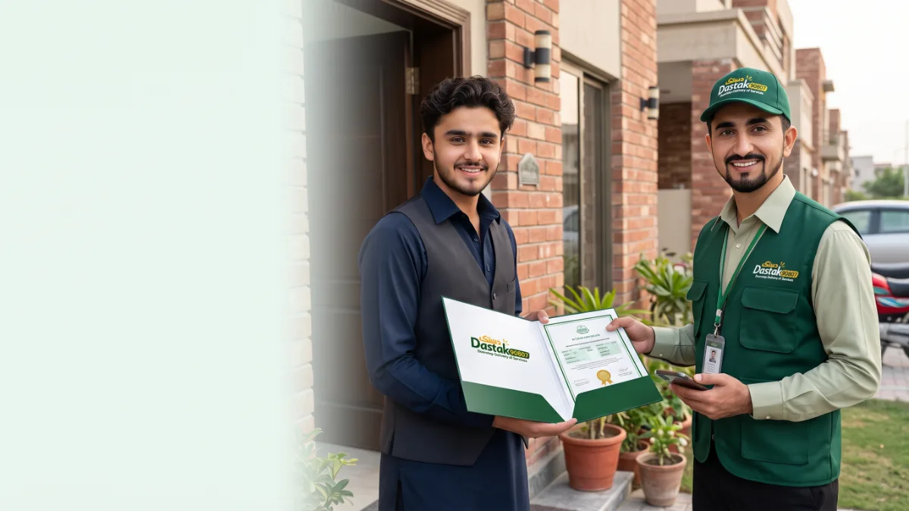

Police Character Certificate
For visas, jobs and study abroad. We apply online and share your tracking number. Passport required.
No office visit needed. Send your documents on WhatsApp and Muhammad Usman, Registered Facilitator Code 90807, applies for you through the official Punjab channels, in every district of Punjab. Verify through Helpline 1202.

ALL PUNJAB · APPLY FROM HOME
No office visit needed. These services are available to citizens in every district of Punjab. Choose a service to see the documents you need, or apply on WhatsApp.
For visas, jobs and study abroad. We apply online and share your tracking number. Passport required.
Renew your Punjab driving license from home. The new license is delivered by Pakistan Post.
Transfer of motorcycles, cars and commercial vehicles. Buyer and seller each complete the Excise biometric step.
Employee, driver and general police verification for employers and personal records.
Apply for a new learner permit, or renew your learner permit, online.
Renewal and duplicate of your International Driving License (IDL). Passport required.
Lost or damaged your driving license? Apply for a duplicate online.
Register a loss report for lost documents or items, from home.
Get a copy of your FIR for court, insurance or other official use.
OUR LOCAL COMMUNITY
We can visit you at home in Gujar Khan, Rawalpindi and nearby areas. Domicile and civil certificates are currently provided for Gujar Khan and nearby areas only.
New domicile, duplicate, modification and NOC for domicile transfer.
Civil registration certificates for families in Gujar Khan and nearby villages.
Registration of new cars and motorcycles, with doorstep document pickup.
Ask on WhatsApp to confirm availability for your district.
NO OFFICE VISIT NEEDED
You do not need to visit any office. Send your documents on WhatsApp, we apply through the official Punjab channels, and you track your application with the number we give you.
Message 0345-5583530 with the service you need. We share the exact document list and fee.
Muhammad Usman (Code 90807) submits your application through the official Punjab system and shares your tracking number.
For services such as the character certificate or vehicle transfer, verify your fingerprints in the NADRA Pak ID app at home, or at any NADRA eSahulat centre.
We keep you updated on WhatsApp until your document is approved. Delivery depends on the service, for example driving licenses come by Pakistan Post.
In Gujar Khan, Rawalpindi and nearby areas, we can also visit you at home. See where we serve →
QUICK LINKS
Estimate fees for driving licenses, cars and motorcycles.
Open calculator →Prepare your documents and share your checklist on WhatsApp.
Check documents →Find Punjab tracking, verification and payment portals.
Open portals →Download verified PDFs or find current forms on department portals.
Browse forms →WHERE WE SERVE
Police character certificate, police verification, driving licenses, learner permit, loss report, FIR copy and vehicle transfer, from any district, including:
By arrangement in Gujar Khan, Rawalpindi and nearby areas:
I am Muhammad Usman, a verified citizen facilitation representative operating under the Government of Punjab’s flagship initiative, Maryam Ki Dastak (Facilitator Code: 90807).
An independent facilitation service helping citizens across Punjab apply online for police, driving license and vehicle documents, with doorstep visits in Gujar Khan and Rawalpindi. Confirm requirements and availability before booking. Verify Facilitator Code 90807 through the official helpline 1202.
About Muhammad Usman and registration verification ↗IN OUR CUSTOMERS’ WORDS
I had an excellent experience using the Dastak App for my domicile application. Since I had no prior knowledge or experience regarding the required documents, application process, or where to go, I was initially quite unsure about how to …
⭐⭐⭐⭐⭐ Excellent Guidance and Professional Support I really appreciate the excellent guidance and support provided by my friend …
Mr. Usman is very polite, professional, and friendly. He is extremely helpful and always willing to assist. I truly appreciate his excellent service and support.
I had a great experience using the Dastak app to apply for my Police Character Certificate. The process was smooth, and the person who handled my application was very professional, cooperative, and helpful. I truly appreciate the excellent service and professional attitude. Keep up the good work!
Very professional and helpful Dealing. He listened to my driving license issue patiently and helped me a lot in getting it resolved.
Such a great service. Very cooperative staff. Best service in Pakistan
Your service is very well & works behavior is so nice
Alhamdulillah, I renewed my and my brother's driving license through the Dastak App and had a wonderful experience. …
My perspective has been altered by your timely competent service and I am proud to deal with some like you. Because of your diligence, integrity, and commitment to professionalism. You are the one who has transformed the perception of …
I renewed my license through Dastak facilitater and it was a very good experience very good and helpfull method very easy for all. And staff is very corporative one day my all needed document is ready
Very positive response from Muhammad usman with in 24 hours my appilaction registered and new license is issued
Polite, punctual, and highly knowledgeable. Usman guided me through every single requirement for my Renewal of driving license renewal.
I am really satisfied and surprised from Dastak rapid response
Very satisfied and polite behaviour of facilitator
I m a businessman I have short of time but Mr Usman Saved me from the usual office runarounds. Got my Domicile certificate within days on my doorstep without visiting any office.
Excellent Service
Very good
Very good experience The muavin was very kind and helpful
Best online learner's license facilitator in Rawalpindi
Great service, and very cooperative Best characters certificate online service in Gujar khan
Well 😊
An exceptionally gratifying experience with Dastak Online Document Facilitation, made all the more commendable by Usman’s exemplary assistance. …
Best domicile service in Gujar khan. No need to visit any office. Thanks to Mr Usman he is very Cooperative professional will to help every time.
Very good service, prompt response, and a smooth registration process.
Very good person
Service is very good
Remarkable service standards. Clear communication, proper tracking, and zero confusion throughout the process. Best service for license renewal and character certificate in Rawalpindi Gujar Khan and surrounding.
Good work Excellent ♥️
He guided me on every step regarding my domicile certificate. Authentic government document facilitation right at your doorstep. Transparent, courteous, and efficient.
Excellent 👌
I consider you to be a trustworthy and supportive person.
> The online license app is very helpful and easy to use. I applied for my license online without visiting the office. Process was smooth and fast. Excellent initiative by the government. Highly recommended! …
Very disciplined cooperative
Great service! I'm really satisfied with it.
The domicile certificate process was completely stress-free. Wonderful service, highly recommended to everyone.
Very positive response from Muhammad usman with in 24 hours my appilaction registered and new license is issued Thanks dear
Very good service and customer service very good and excellent.
Outstanding police character Certificate assistance. Everything was processed seamlessly without unnecessary delays. Great initiative thanks to Muhammad Usman very professional Recommended 100%.
Very professional and impressed Highly recommend
Good
I renewed my and my cousin driving license from Muhammad Usman he did it very fast and i received my driving license at my doorstep. Trusted and honest person.
It was really nice experience
Exceptional service! Got my driving license renewed without visiting any office. Facilitator 90807 was extremely polite and professional. Highly recommended
"Dastak app has really made life a lot easier. Applying for your job and getting service from home has now become child's play. The speed of the app and customer support are also very good. Highly commendable service!"
Thank you so much Sir Usman, because of you my work got done so quickly, I took your advice, I am very grateful to you. May Allah Pak salute you.
They gave very good and useful advice and have good morals. And provided a lot of convenience.
Amanat Ali Local Guide·6 reviews·38 photos 9 hours ago New
Good Service Gujar Khan Khidmat Markaz Spacially Muhammad Usman
Today I renewed my driving license through Maryam Ki Dastak Service. Alhamdulillah, it was a great experience. 😊 The service was also excellent and the attitude of the concerned person was also …
I renewed my license through Dastak facilitater and it was a very good experience very good and helpfull method very easy for all. And staff is very corporative one day my all needed document is ready
great and fast service Authentic
I renew my driving license and its deliver and updated in few days....thanks recommended 100%
I renewed my and my brother's driving license online through the Dastak App, and believe me, it has an excellent system. Your application is processed immediately. A representative contacts you on your registered WhatsApp number and you can send all your required documents right there. Within 8 to 10 hours your application is submitted and you get a positive response as well …
Customer reviews and recommendations. Some entries are excerpts; individual experiences and processing times vary.
No. For our Punjab-wide services you apply from home: send your documents on WhatsApp and we submit the application through the official Punjab channels. If a service needs biometric verification, you can complete it in the NADRA Pak ID app or at any NADRA eSahulat centre.
Online services are available in every district of Punjab, including Lahore, Faisalabad, Multan, Gujranwala, Jhelum, Chakwal and Attock. Doorstep visits are available by arrangement in Gujar Khan, Rawalpindi and nearby areas.
Police character certificate, general police verification, loss report, FIR copy, driving license renewal, duplicate driving license, international driving license renewal and duplicate, learner permit (new and renewal), and vehicle ownership transfer.
Domicile certificates and birth, death, marriage and divorce certificates are currently provided for Gujar Khan and nearby areas only. New vehicle registration is offered locally in Gujar Khan and Rawalpindi.
Some services, such as the police character certificate and vehicle transfer, need fingerprint verification. After we apply, you get a tracking number and complete the biometric step yourself through the NADRA Pak ID app or at a NADRA eSahulat centre anywhere in Pakistan. Our office does not take fingerprints.
Maryam Ki Dastak is a Government of Punjab initiative for doorstep public services. Contact Muhammad Usman, Registered Facilitator Code 90807, to confirm documents and availability. Applications are submitted through the relevant official Punjab channels.
Call the official Punjab Maryam Ki Dastak helpline 1202 to verify Muhammad Usman and Facilitator Code 90807 before sharing documents.
Use our Punjab Fee Calculators for estimates and confirm the applicable official charges and facilitation costs before proceeding. Final fees and eligibility are determined by the relevant department.
Contact us for guidance on Punjab e-Biz business services and fisheries e-licenses. Confirm the service requirements and availability before booking.
LET’S GET YOUR DOCUMENTS SORTED
Sandal Road, Ward No. 14, Gujar Khan, Punjab 47850
KNOW WHAT TO PREPARE
Practical answers for Gujar Khan, Rawalpindi and nearby communities.

Two-stage tracking guide: DLIMS status by CNIC, then Pakistan Post delivery.
Read guidePunjab license renewal: documents, fees and tracking.
Read guide
Police character certificate preparation and verification.
Read guide